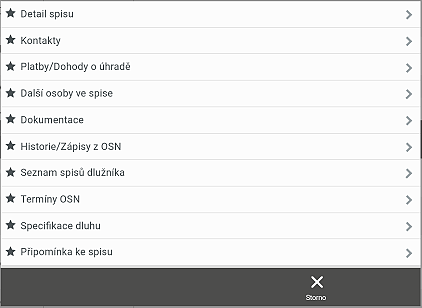

Podzáložka
Celkem je 9 podzáložek, každá záložka má přesně specifikovaný obsah.
Pole ve všech podzáložkách jsou needitovatelná, mají pouze informativní zobrazení.

Poslední položkou je Připomínka ke spisu - ta slouží pro vytvoření případné Připomínky k danému spisu pro případ, že volá klient a je nutné si něco poznamenat. Ve webové aplikaci Trace si tuto připomínku uživatel zpracuje (zapíše kontakt s klientem, odloží spis ke zpracování apod) a připomínku může vymazat.